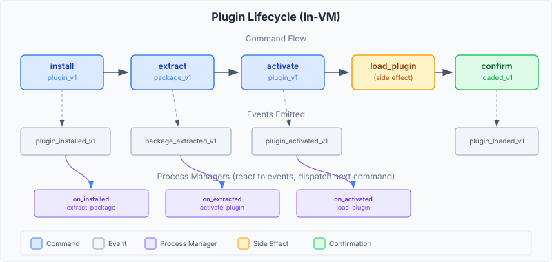
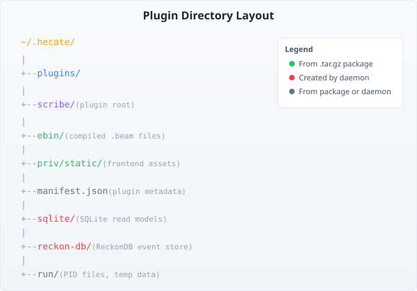

Plugin Architecture
View SourceThis guide explains how plugins are loaded, run, and unloaded inside the Hecate daemon.
In-VM vs Container Plugins
Hecate supports two plugin models:
| Aspect | In-VM | Container |
|---|---|---|
| Runtime | Shared BEAM VM | Separate Podman container |
| Performance | Direct function calls | HTTP over Unix socket |
| Isolation | OTP application boundary | OS-level isolation |
| Dependencies | Shared (via SDK) | Bundled in OCI image |
| Hot reload | Code path swap | Container restart |
| Use case | Most plugins | Untrusted or non-BEAM code |
This SDK is for in-VM plugins. Container plugins use a different deployment model.
Plugin Lifecycle
A plugin goes through these stages when installed:

1. Install
The daemon receives an install command with plugin_type = "in_vm" and callback_module. This creates the plugin record in the aggregate with status INSTALLED.
2. Extract
A process manager reacts to the install event and dispatches the extract command. The handler:
- Locates the
.tar.gzat~/.hecate/plugins/{name}/{name}.tar.gz - Extracts it to
~/.hecate/plugins/{name}/ - Verifies
ebin/exists after extraction - Emits
plugin_package_extracted_v1
3. Activate
Another process manager reacts to the extraction event and dispatches the activate command. This sets the ACTIVATED status flag.
4. Load
The final process manager calls hecate_plugin_loader:load_plugin/2, which:
- Creates the directory layout via
hecate_plugin_paths:ensure_layout/1 - Adds
ebin/to the code path viacode:add_pathz/1 - Ensures the callback module is loadable via
code:ensure_loaded/1 - Reads the manifest via
CallbackModule:manifest/0 - Creates a ReckonDB store if
store_config/0returns one - Calls
CallbackModule:init/1with the plugin config - Mounts API routes under
/plugin/{name}/api/ - Serves static assets at
/plugin/{name}/ - Hot-swaps the cowboy dispatch table
- Dispatches
confirm_plugin_loaded_v1
5. Unload (on deactivate/remove)
When a plugin is deactivated:
- Routes are removed from the cowboy dispatch
- Code path is removed via
code:del_path/1 - Callback module is purged from the VM
Directory Layout
Every plugin gets a standard directory structure:

~/.hecate/plugins/{name}/
ebin/ .beam files (from .tar.gz)
priv/static/ Frontend assets (optional)
manifest.json Plugin metadata
sqlite/ SQLite read model databases
reckon-db/ ReckonDB event store data
run/ PID files, temp dataThe hecate_plugin_paths module provides functions for all these paths. Your plugin never needs to construct paths manually.
Plugin Config via persistent_term
When your init/1 is called, you receive a config map. Store it in persistent_term so your domain modules can find it:
init(#{plugin_name := Name, store_id := StoreId, data_dir := DataDir}) ->
persistent_term:put(my_plugin_config, #{
plugin_name => Name,
store_id => StoreId,
data_dir => DataDir
}),
my_plugin_sup:start_link().Domain modules read the config:
resolve_db_path() ->
case persistent_term:get(my_plugin_config, undefined) of
#{data_dir := DataDir} ->
filename:join([DataDir, "sqlite", "read_model.db"]);
undefined ->
%% Fallback for standalone mode
"/tmp/my_plugin/read_model.db"
end.Event Sourcing in Plugins
If your plugin returns a store_config/0, the daemon creates a ReckonDB store for you. Use it with evoq for full CQRS/ES:
%% Dispatch a command to your plugin's store
Opts = #{
store_id => my_items_store, %% From your store_config/0
adapter => reckon_evoq_adapter,
consistency => eventual
},
evoq_dispatcher:dispatch(EvoqCmd, Opts).Or use the SDK convenience function:
hecate_plugin_store:dispatch(my_items_store, EvoqCmd, #{}).Route Hot-Swapping
When your plugin loads, the daemon recompiles cowboy's dispatch table to include your routes. This happens atomically via cowboy:set_env/3. Existing connections are not interrupted.
Your routes are namespaced under /plugin/{name}/api/ to prevent conflicts between plugins.
SDK Helper Modules
The SDK includes helpers that handle common plugin needs:
| Module | Purpose | When to use |
|---|---|---|
hecate_plugin_validate | Input validation | Validating JSON request bodies |
hecate_plugin_ratelimit | Token bucket rate limiter | Protecting API endpoints |
hecate_plugin_scheduler | Periodic tasks | Cleanup jobs, sync tasks |
hecate_plugin_files | File upload/download | Handling binary data |
hecate_plugin_ws | WebSocket helpers | Live UI updates |
hecate_plugin_cowboy | Route prefixing | Custom route setup |
hecate_plugin_paths | Standard directory layout | Finding data directories |
hecate_plugin_store | ReckonDB store helpers | Event store operations |
Supervision Strategy
Your plugin's init/1 should start a supervision tree. The daemon does not supervise your internal processes -- you own your supervision hierarchy:
init(Config) ->
persistent_term:put(my_plugin_config, Config),
case my_plugin_sup:start_link() of
{ok, Pid} -> {ok, #{sup_pid => Pid}};
{error, Reason} -> {error, Reason}
end.Your supervisor manages your domain apps (CMD, PRJ, QRY) following vertical slicing:
my_plugin_sup
project_items_sup (PRJ - read models)
guide_item_lifecycle_sup (CMD - commands/events)
query_items_sup (QRY - API handlers)